Introduction
Ce rapport accompagne le relevé d'audit effectué sur le site « Letzshop ».
La méthodologie d'audit employée repose sur le référentiel RGAA 4.1, consultable à l'adresse suivante : https://accessibilite.public.lu/fr/rgaa4.1/criteres.html
L'audit a été réalisé au moyen de l'utilisation de navigateurs web et d'outils spécialisés. Des tests de restitution ont également été effectués conformément à la base de référence définie par le RGAA 4.1.
Échantillon
L'audit a porté sur un échantillon de 15 pages pour le niveau double A (AA) :
| Nº page | Titre de la page | URL |
|---|---|---|
| P01 | Accueil | https://letzshop.lu/fr |
| P02 | Contact | https://letzshop.lu/fr/contact |
| P03 | Mention légales d'un vendeur | https://letzshop.lu/fr/legal/nMaBdG2Spw#imprint |
| P04 | Authentification | https://letzshop.lu/fr/login |
| P05 | Aide | https://letzshop.lu/fr/ueber-uns |
| P06 | Création d'un compte | https://letzshop.lu/fr/signup?redirect_url=FO%2BX24MtV510WUmsd2Lfe3fb4bkw%2FOu6pGCXCKeHnEBce9z0SSc%3D--lz7iRT0He2NiFGvR--A08wUWrIqh2tHk4SuDj8dA%3D%3D |
| P07 | Mon compte | https://letzshop.lu/fr/account |
| P08 | Catégories | https://letzshop.lu/fr/categories |
| P09 | Produits | https://letzshop.lu/fr/products |
| P10 | Détail d'un produit | https://letzshop.lu/products/fr/pull-a-manches-courtes-avec-rayures-en-bloc-e59910 |
| P11 | Chèque cadeau | https://letzshop.lu/fr/products/bon-cadeau-letzshop-d37a60 |
| P12 | Commerçants | https://letzshop.lu/fr/vendors |
| P13 | Partners | https://letzshop.lu/fr/info/partner |
| P14 | Panier | https://letzshop.lu/fr/cart |
| P15 | Adresse de livraison | https://letzshop.lu/fr/checkout/address |
| P16 | Vérification de la commande | https://letzshop.lu/fr/checkout/confirm |
| P17 | Paiement | https://letzshop.lu/fr/checkout/payment |
Environnement de test (base de référence)
Quelques critères RGAA, notamment ceux de la thématique JavaScript, incluent des tests de restitution à effectuer sur des technologies d'assistance associées à des navigateurs et des systèmes d'exploitation. Pour qu'un dispositif HTML / WAI-ARIA ou son alternative soit considéré comme compatible avec l'accessibilité, il faut qu'il soit pleinement fonctionnel, en termes de restitution et de fonctionnalités sur certaines combinaisons. Vous trouverez une explication détaillée de cet environnement de tests dans le document du RGAA 4.1.
Nous détaillons ci-dessous la base de référence utilisée pour réaliser les tests de restitution des composants du site.
Environnement de test – ordinateur
| Technologie d'assistance | Navigateur |
|---|---|
| NVDA 2021.4 | Firefox 104 |
| JAWS 2021 | Firefox 104 |
| VoiceOver | Safari 16 |
Environnement de test — mobile
| Système d'exploitation | Technologie d'assistance | Navigateur |
|---|---|---|
| Android 12 | TalkBack (dernière version) | Chrome 104 |
Accessibilité des pages auditées
Le site présente un niveau général d'accessibilité faible.
Le niveau moyen de conformité relevé atteint 26,32 % de conformité sur l'ensemble des pages auditées, avec 23,81 % de conformité au niveau simple A (A) et 26,32 % de conformité au niveau double A (AA).
Le site est non conforme.
Conformité RGAA 4.1 du site
| Conforme | Non conforme | |
|---|---|---|
| A | 23,81 % | 33,33 % |
| AA (légal) | 76,19 % | 66,67 % |
Note sur le calcul de conformité
La conformité globale (Tableau « Conformité RGAA 4.1 ») est calculée de la manière suivante : C / (C+NC). C'est le nombre de critères conformes et NC le nombre de critères non conformes.
C'est ce nombre qui constitue la référence légale. Il représente le taux de conformité de l'échantillon.
Il est normal que le taux de conformité global diffère sensiblement du taux de conformité par page. En effet, un critère NC (non conforme) sur une page rend le critère non conforme sur l'ensemble de l'échantillon.
Pour qu'un site soit conforme (100 % des critères applicables sont conformes au niveau AA), il est nécessaire que le taux de conformité par page équivaille à 100 %.
Conformité pour chaque niveau
| Conforme | Non conforme | |
|---|---|---|
| A | 23,81 % | 76,19 % |
| AA | 26,32 % | 73,68 % |
Moyenne par pages
| Nº page | Titre de la page | %C |
|---|---|---|
| P01 | Accueil | 36,17 % |
| P02 | Contact | 77,14 % |
| P03 | Mention légales d'un vendeur | 68,75 % |
| P04 | Authentification | 65,00 % |
| P05 | Aide | 61,76 % |
| P06 | Création d'un compte | 61,36 % |
| P07 | Mon compte | 75,86 % |
| P08 | Catégories | 85,71 % |
| P09 | Produits | 48,65 % |
| P10 | Détail d'un produit | 47,83 % |
| P11 | Chèque cadeau | 65,79 % |
| P12 | Commerçants | 51,43 % |
| P13 | Partners | 74,19 % |
| P14 | Panier | 77,14 % |
| P15 | Adresse de livraison | 51,28 % |
| P16 | Vérification de la commande | 47,37 % |
| P17 | Paiement | 48,65 % |
Moyenne par thématiques
| Thématiques | C | NC |
|---|---|---|
| Images | 00,00 % | 100,00 % |
| Couleurs | 00,00 % | 100,00 % |
| Liens | 00,00 % | 100,00 % |
| Script | 25,00 % | 75,00 % |
| Eléments obligatoires | 25,00 % | 75,00 % |
| Structuration | 00,00 % | 100,00 % |
| Présentation | 08,33 % | 91,67 % |
| Formulaires | 22,22 % | 77,78 % |
| Navigation | 62,50 % | 37,50 % |
| Consultation | 80,00 % | 20,00 % |
Impacts utilisateurs
Les principales personnes impactées sont les personnes aveugles et celles qui naviguent au clavier. Les problèmes liés aux scripts, à l'API ARIA et aux formulaires, rendent parfois difficile l'utilisation du site par ces utilisateurs.
Note sur le relevé des non-conformités
Ne sont cités dans ce rapport que quelques exemples issus du relevé des non-conformités.
De plus, toutes les occurrences d'une non-conformité ne sont pas listées dans le relevé. Par exemple : « Les textes en haut à gauche dans les éléments du carrousel, blanc (#FFFFFF) sur différentes images ont un ratio variable , par exemple 1.4:1, ou encore 2.2:1 au lieu de 4.5 », le relevé mentionne quelques occurrences, mais ne les cite pas tous.
Avis
Le site Letzshop a un niveau faible d'accessibilité. Le taux global révèle un statut non conforme, ce qui va rendre l'accès aux contenus du site difficile, voire impossible pour certaines personnes ayant un handicap. Cependant, parmi les non-conformités, la correction des erreurs relevées ne nous semble pas impossible, sous réserve des contraintes techniques.
Les non-conformités les plus bloquantes pour les utilisateurs concernent :
- Des contrastes insuffisants sur les textes et certains composants d'interface ;
- Les scripts, notamment les composants ARIA qui ne sont pas bien implémentés ;
- Les éléments non atteignables au clavier (par exemple, des textes apparaissant sur des produits) ;
- La structure HTML et les landmarks ARIA ;
- La non-visibilité de prise de focus sur certains éléments (par exemple, le logo du site) ;
- Des images non ignorées pour les technologies d'assistance, ou porteuses d'information sans alternative.
Ce sont donc ces points qui devront nécessiter une attention toute particulière et qui demanderont le plus d'efforts.
Annexe technique
Images
Recommandation
Donner à chaque image porteuse d'information une alternative textuelle pertinente et une description détaillée si nécessaire. Lier les légendes à leurs images. Remplacer les images textes par du texte stylé lorsque c'est possible.
Images de décoration
Le site contient des images de décoration qui ne sont pas correctement identifiées, soit parce qu'elles ont une alternative renseignée, soit parce qu'il manque les attributs nécessaires pour qu'elles soient ignorées par les technologies d'assistance.
Ces images n'apportent aucune information et peuvent causer des problèmes de compréhension pour les aveugles et les grands malvoyants qui vont écouter les contenus avec un lecteur d'écran.
- Dans le cas d'une image insérée avec la balise
img, mettre unalt="". - Dans le cas d'une image insérée avec la balise
svg, mettre une propriété ARIAaria-hidden="true".
Constats sur le site
-
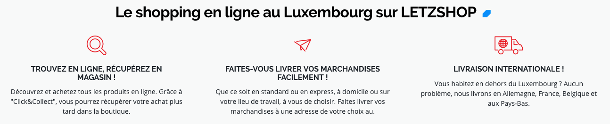
Sur la page d'accueil du site, les fonts-icones des éléments du bloc "Le shopping en ligne au Luxembourg sur LETZSHOP" n'ont pas d'attribut
alt=""(vide). -
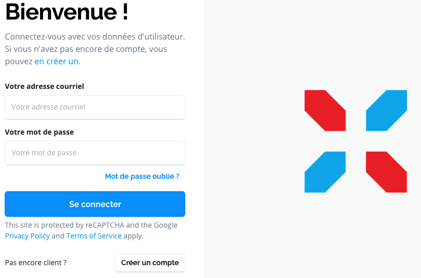
Sur les pages de connexion et de création de compte l'image du logo à droite de la page, n'a pas d'attribut
alt=""(vide).
Images porteuses d'information
Il est nécessaire de donner une alternative pertinente dans le cas où la suppression de l'image entraînerait un problème de compréhension des contenus.
Constats sur le site
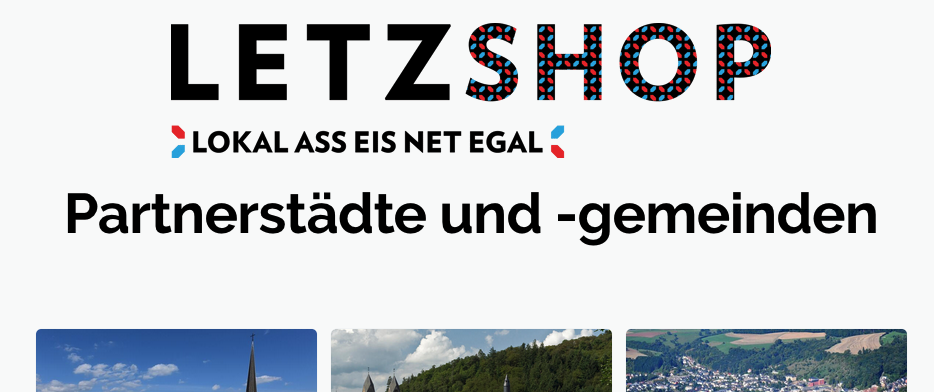Sur la page des partenaires (Partners), l'image "LETZSHOP lokal ass eis net egal" n'a pas d'alternative textuelle (aria-hidden="LETZSHOP lokal ass eis net egal").
Couleurs
Recommandation
Ne pas donner l'information uniquement par la couleur et utiliser des contrastes de couleurs suffisamment élevés pour les textes et les composants d'interface.
Contrastes des textes
Plusieurs couleurs présentent un rapport de contraste insuffisant, ce qui peut poser problème aux personnes déficientes visuelles qui ont des difficultés à percevoir les couleurs ou les contrastes.
Rapports de contrastes définis par le RGAA
- Pour les textes qui ont une taille de police calculée inférieure à 24px sans effet de graisse ou une taille de police calculée inférieure à 18,5px avec effet de graisse, le rapport de contraste entre la couleur du texte (y compris le texte en image) et son arrière-plan doit être de 4.5:1, au moins.
- Pour les textes qui ont une taille de police calculée supérieure ou égale à 24px sans effet de graisse ou une taille de police calculée supérieure ou égale à 18,5px avec effet de graisse, le rapport de contraste entre la couleur du texte (y compris le texte en image) et son arrière-plan doit être de 3:1, au moins.
Vous pouvez foncer les couleurs pour obtenir le rapport de contraste exigé.
Si la charte graphique ne peut être modifiée, fournissez une méthode aux utilisateurs pour consulter le site avec des contrastes suffisants. Ceci peut être réalisé simplement avec une fonctionnalité JavaScript et une surcharge CSS des couleurs.
Vous pouvez voir un exemple de ce type de mécanisme sur le site sncf.com. Dans les réglages d'accessibilité, vous trouverez une option qui permet d'afficher le site avec des contrastes renforcés et inversés.
Constats sur le site
-
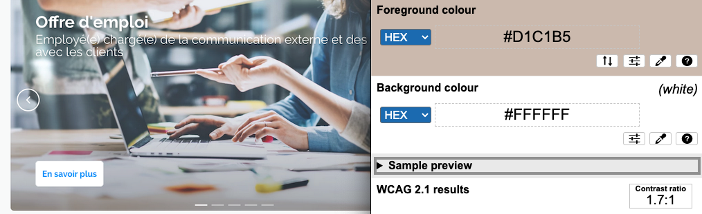
Sur la page d'accueil, les textes en haut à gauche dans les éléments du carrousel ont un ratio variable suivant l'image mise en arrière plan, par exemple 1.7:1, ou encore 2.2:1, ..., au lieu de 4.5.
-
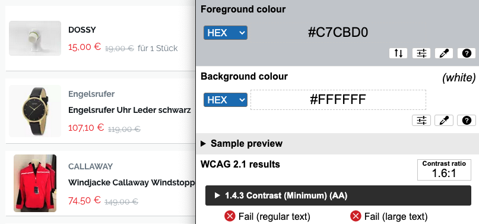
Sur la page d'accueil, les prix barrés, par exemple "19,00 €"dans les blocs "Découvrez toutes les nouveautés", "Promotions en cours", ont un ratio 1.6:1 au lieu de 4.5.
Contraste des composants d'interface
Les composants d'interface, les illustrations porteuses d'information ou encore les mises en couleurs porteuses d'information doivent être suffisamment contrastés pour être perçus par les utilisateurs ayant des troubles de perception des couleurs. Par exemple, une icône porteuse d'information devra avoir un rapport de contraste avec la couleur de fond de 3. De même, pour un champ de saisie de formulaire, dont la zone active est matérialisée par sa bordure, alors la couleur de cette bordure devra avoir un rapport de contraste de 3 avec la couleur de fond de la page.
Constats sur le site
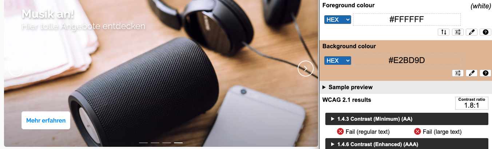Sur la page d'accueil, dans le carrousel en haut de la page, les flèches suivante et précédente, les boutons indiquant l'élément actif du carrousel et les éléments non actifs ont un ratio variable suivant l'image affichée en arrière plan, par exemple 1.4:1, ou encore 2.2:1, ..., au lieu de 3.
Information par la couleur
Lorsqu'une information est donnée par la couleur, il faut qu'elle soit également véhiculée par une autre méthode, par exemple par un texte qui donne la même information, pour être perçue par les utilisateurs aveugles.
Il faut également donner un indice visuel autre que la couleur, afin de répondre aux besoins des personnes déficientes visuelles (les daltoniens par exemple). Il peut s'agir d'un symbole, d'une texture, de chiffres.
Constats sur le site
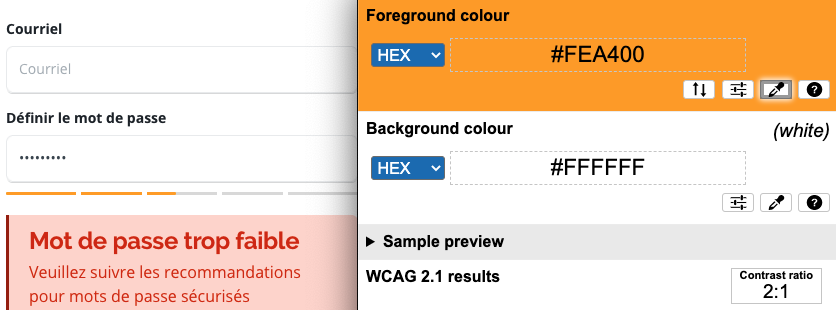Sur la page de création de comptes, les indicateurs de sécurité du mot de passe ont des niveaux de contrastes insuffisants :
- gris (#DCDCDC) sur fond blanc a un ratio de 1.4:1 ;
- orange (#FEA400) sur fond blanc a un ratio de 2:1 ;
- vert (#99CD32) sur fond blanc a un ratio de 1.9:1.
Liens
Recommandation :
Donner des intitulés de lien explicites, grâce à des informations de contexte notamment, utiliser le titre de lien le moins possible. S'assurer que le nom visible est contenu dans le nom accessible.
Pertinence des intitulés
Un lien possède généralement un intitulé et un contexte. L'intitulé est le texte présent dans la balise <a> (ou la valeur de l'attribut alt de l'image dans le cas d'un lien-image) et le contexte du lien est représenté par le titre qui précède, le titre du lien (l'infobulle) ou tout simplement le texte dans lequel il est inséré.
Pour être considéré comme pertinent, l'intitulé d'un lien doit permettre de comprendre sa destination en prenant en compte son contexte.
Constats sur le site

L'intitulé du lien : "DE", dans le sélecteur de langue en haut à droite dans l'en-tête principal du site n'est pas assez explicite.
Liens-images
Un lien-image est un lien dont le contenu n'est composé que d'une ou plusieurs images (balises <img>). Généralement, ces liens ne posent aucun problème aux utilisateurs voyants qui parviennent à comprendre la destination du lien grâce à l'image et son contexte. En revanche, pour une personne aveugle, ces liens doivent obligatoirement posséder un intitulé.
L'intitulé d'un lien-image est généré grâce à l'alternative de l'image contenue dans ce lien.
Constats sur le site
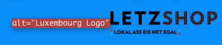Le lien image du logo du site (dans l'en-tête principal du site) a un attribut alt="Luxembourg Logo".
Présence d'intitulés
Un lien doit toujours posséder un intitulé permettant à l'utilisateur de comprendre sa destination. Les liens contenant uniquement des objets graphiques (images, icônes, etc.) posent souvent problème pour les personnes aveugles.
Pour ces liens, la technique pour fournir un intitulé dépend des cas :
- Si ces liens-images sont construits avec des balises images (
<img />), renseignez l'alternative de l'image (par exemple :<a href="https://twitter.com/example"><img src="path/to/img/png"alt="Suivez-nous sur Twitter" /></a>) - Si ces liens-images sont construits avec des balises SVG (
<svg>), alors ajoutez sur cette balise unrole="img"pour indiquer aux lecteurs d'écran qu'il s'agit bien d'une image et un intitulé pararia-label="Suivez-nous sur Twitter".
Constats sur le site
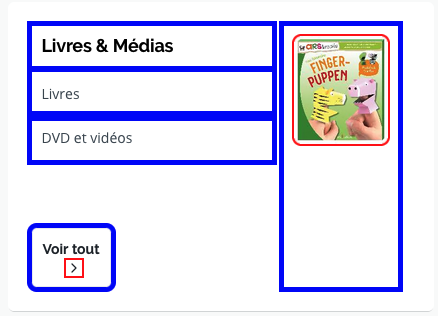Sur la page d'accueil du site, les liens-images sur la droite des éléments du bloc "Principales catégories", n'ont pas d'alternative textuelle.
Scripts
Recommandation :
Donner si nécessaire à chaque script une alternative pertinente. Rendre possible le contrôle de chaque code script au moins par le clavier et la souris et s'assurer de leur compatibilité avec les technologies d'assistance. Identifier les messages de statut lorsque c'est nécessaire.
Utilisation des boutons et des liens
Pour les aveugles et les grands malvoyants qui utilisent un lecteur d'écran, ce manque de distinction claire entre les liens et les boutons peut poser de graves problèmes.
Ainsi, un bouton implémenté sous la forme d'un lien qui déclenche une action de la page, risque de perturber l'utilisateur qui s'attendra au chargement d'une nouvelle page.
De manière générale, les liens devraient être réservés à l'affichage d'une nouvelle page ou la création de liens d'accès rapide dans le contenu. Dans tous les autres cas, l'emploi d'un bouton d'action est plus pertinent.
Éléments interactifs inaccessibles au clavier
Si un élément ne peut pas recevoir le focus ou n'est pas totalement utilisable au clavier, les utilisateurs pour lequel le clavier est le seul moyen de naviguer seront bloqués.
Constats sur le site
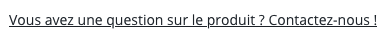Sur la page du produit : "Pull à manches courtes avec rayures en bloc", le texte "Vous avez une question sur le produit ? Contactez-nous !", permettant d'afficher la modale "Informations de contact", n'est pas dans un élément <button>.
Fenêtres modales
Constats sur le site
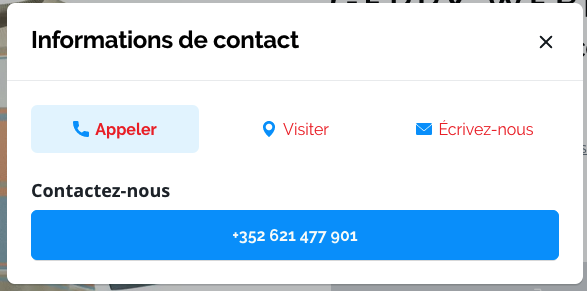Sur la page du produit : "Pull à manches courtes avec rayures en bloc", le composant permettant de contrôler l'affichage de la modale de contact (en cliquant sur le texte "Vous avez une question sur le produit ? Contactez-nous !"), n'implémente pas le modèle de conception ARIA Dialog (Modal)
Gestion de la visibilité de zones
Le site possède des fonctionnalités d'affichage ou de masquage des zones de contenus. L'état affiché/masqué du contenu additionnel doit pouvoir être disponible pour les technologies d'assistance afin que les utilisateurs aveugles accèdent à cet état.
Pour ce type d’élément, l’implémentation du motif ARIA Disclosure est recommandée.
Constats sur le site
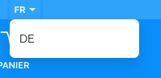Dans l'en-tête principal du site, le composant permettant de contrôler l'affichage du choix des langues, n'implémente pas le modèle de conception ARIA Disclosure.
Autocomplétion
Les champs de saisie qui proposent des listes de résultats au fil de la saisie ne sont pas toujours accessibles aux utilisateurs qui ne perçoivent pas l’écran ou ne le perçoivent pas dans sa totalité. En effet, ils n’ont pas l’information que des résultats sont apparus par exemple, ou encore que la recherche ne retourne aucun résultat.
Constats sur le site
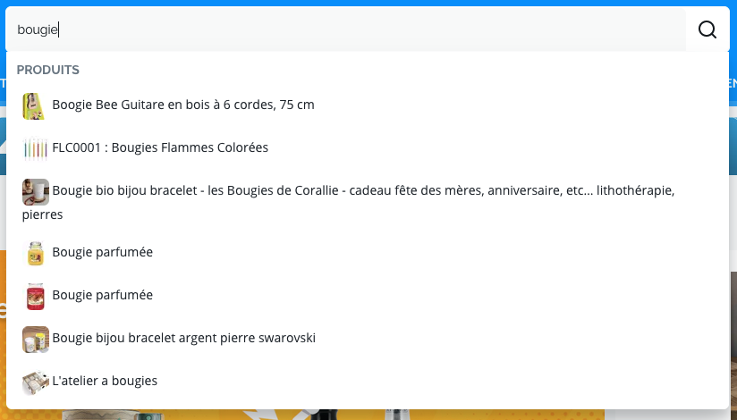Dans le menu de navigation principale du site, le moteur de recherche "Explorer les distributeurs, produits et prestataires de service à Luxembourg", n'implémente pas le modèle de conception ARIA Combobox.
Message de statut
Les messages de statut concernent les messages d'alerte, de confirmation ou d'historisation. Dans tous ces cas, certains utilisateurs, par exemple les personnes aveugles ou les utilisateurs de loupes d’écran vocalisées, risquent de ne pas prendre connaissance de ces messages si leur restitution n'est pas contrôlée.
L'API ARIA propose plusieurs rôles spécifiques qui permettent de contrôler la restitution de ce type de message :
- Le
role="alert"pour les messages d'alerte ; - Le
role="status"pour les messages de confirmation ; - Le
role="log"pour les messages d'historisation.
L'utilisation appropriée de ces rôles va permettre de déclencher leur vocalisation dès qu'ils deviendront actifs (rendus visibles ou insérés dans le DOM).
Constats sur le site
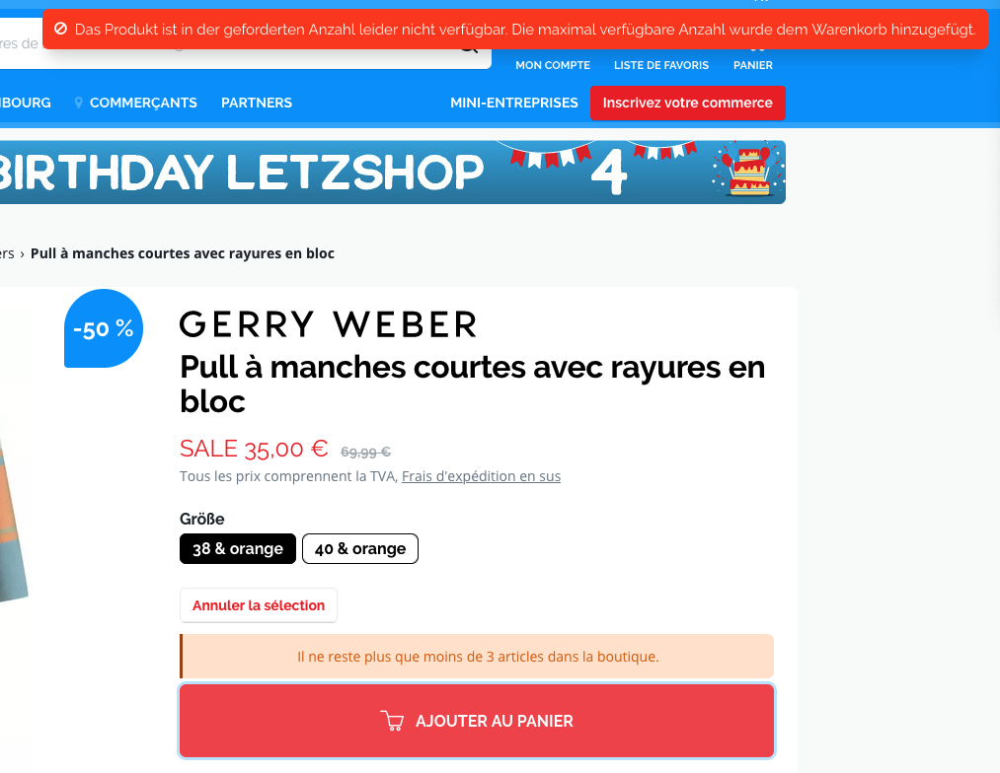Sur la page du produit "Pull à manches courtes avec rayures en bloc" :
- le message "Il ne reste plus que moins de 3 articles dans la boutique. " au-dessus du bouton, "Ajouter un panier" n'est pas restitué aux technologies d'assistance ;
- quand on veut ajouter un second produit au panier, le message d’erreur en Allemand "Das Produkt ist in der geforderten Anzahl leider nicht verfügbar. Die maximal verfügbare Anzahl wurde dem Warenkorb hinzugefügt." n’est pas restitué.
Changement de contexte
Un changement de contexte est une situation où un utilisateur ne peut pas anticiper le fonctionnement d'une fonctionnalité lorsque celle-ci ouvre une nouvelle page, valide un formulaire ou ajoute ou modifie du contenu dans la page par exemple.
Cela concerne plus spécifiquement les fonctionnalités qui se lancent sans que l'utilisateur puisse les anticiper comme, par exemple, la soumission automatique d’un champ de formulaire sur la sélection d'un item ou lorsque l'utilisateur quitte un champ de saisie.
Constats sur le site
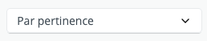Dans la page "Produits à Luxembourg", lorsqu'on sélectionne une des options dans l'élément <select> ("Par pertinence"), le formulaire est soumis automatiquement.
Éléments obligatoires
Recommandation
Vérifier que chaque page web a un code valide selon le type de document, un titre pertinent et une indication de langue par défaut. Vérifier que les balises ne sont pas utilisées uniquement à des fins de présentation, que les changements de langues et de direction de sens de lecture sont indiqués.
Titre de la page
Le titre de la page (visible dans l'onglet du navigateur) est un élément de repère dans le site web. Pour les utilisateurs de lecteurs d'écran (utilisateurs aveugles ou grands malvoyants), c'est le premier élément restitué par le lecteur d'écran au chargement de la page. Cela permet de donner du contexte aux utilisateurs qui n'ont pas une vision globale de la page. C'est l'information à laquelle les utilisateurs avec des troubles de la mémoire accèdent lorsqu'ils naviguent avec l'historique de navigation du navigateur. Il est donc essentiel d'avoir des titres de pages pertinents, concis et très souvent uniques dans le site, et qui reflètent de la position de l'utilisateur dans le site web.
Il est des cas particuliers, comme les pages dont le contenu est une liste de résultats paginés (ex. : les résultats de recherche), pour lesquels le titre doit refléter la nature de la recherche ainsi que le numéro de page en cours de consultation.
Constats sur le site
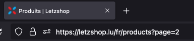Sur la page "Produits", le titre de la page est : "Produits | Letzshop", il ne reprend pas la pagination. Par exemple : "Produits - page 2 | Letzshop".
Indication de langue
Les lecteurs d'écran utilisent les indications de langue pour vocaliser le contenu dans la langue définie. La page doit contenir une définition de langue principale (généralement sur l'élément html).
Ensuite, les éléments de langue étrangère présents dans le contenu doivent être signalés. Si on trouve dans la page des termes absents du dictionnaire de la langue principale de la page, il faut les identifier afin que le lecteur d'écran les restitue dans la langue appropriée. En effet, une mauvaise prononciation pourrait mener à des incompréhensions pour les utilisateurs qui reposent uniquement sur des restitutions orales. Les noms propres sont exclus de cette obligation.
Constats sur le site
-
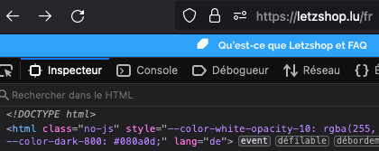
Sur la version française du site, le code de langue HTML est :
lang="de" -
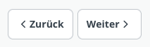
Sur la page "Produits", les boutons "Weiter" et "Zurück" en bas à droite n'ont pas d'indication de changement de langue.
Validité du code
Les technologies d'assistance, comme les lecteurs d'écran ou les systèmes de contrôle à la voix, s'appuient sur le code des pages pour générer les restitutions et les interactions avec l'utilisateur. Un lecteur d'écran va exploiter le code HTML fourni par le navigateur et les informations accessibles au moyen des API d'accessibilité du système.
Si le code comporte des erreurs (balises mal fermées par exemple), il y a un risque que les fonctionnalités du lecteur d'écran soient impactées, comme la navigation de lien en lien par exemple.
Pour vérifier la conformité d'une page, vous pouvez utiliser le validateur mis à disposition par le W3C.
Constats sur le site
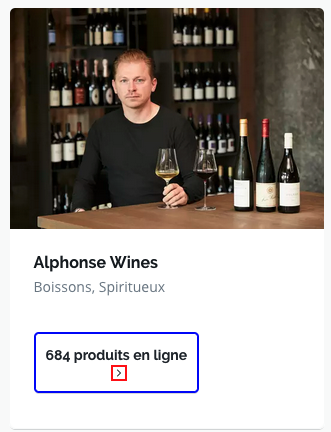Sur la page d'accueil, on retrouve une balise <button> comme enfant d'une balise <a>
Balises utilisées à des fins de présentation
Les éléments de structure HTML ont chacun une sémantique particulière (paragraphe, titre, image, lien, etc.). Si les éléments sont mal employés (détournés de leur utilité première), cela peut poser des problèmes aux utilisateurs qui naviguent à l'aide d'une technologie d'assistance (lecteur d'écran, plug-in…). En effet, les technologies d'assistance disposent de raccourcis permettant de naviguer rapidement entre certains types d'éléments (paragraphes, titres, listes, etc.). Si ces éléments sont mal employés, les utilisateurs ne peuvent pas utiliser ces fonctionnalités de repère et de navigation dans le contenu.
Constats sur le site
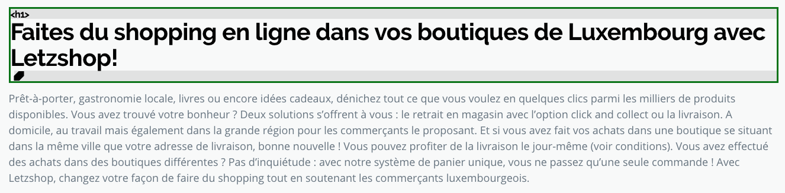Sur la page d'accueil, le texte du bloc "Faites du shopping en ligne dans vos boutiques de Luxembourg avec Letzshop!" est dans une balise <div>
Structuration de l'information
Recommandation
Utiliser des titres, des listes, des abréviations et des citations pour structurer l'information. S'assurer que la structure du document est cohérente.
Titres
Le titrage des contenus est une étape importante dans la structuration des contenus. Cela répond à deux besoins :
- identifier rapidement un contenu recherché ;
- naviguer rapidement dans le contenu en se déplaçant de titre en titre.
Un titrage correct fournit à l'utilisateur d'un lecteur d'écran un plan du document et lui permet de naviguer de titre en titre pour se déplacer plus rapidement dans le contenu de la page.
Pour valider la structure de votre page, vous pouvez utiliser l'extension Firefox HeadingsMap. Lorsque l'extension est active, sélectionnez l'onglet « Headings » et vérifiez la cohérence et l'imbrication des titres.
Constats sur le site
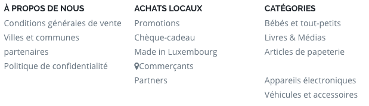Dans le pied de page du site, les textes "À propos de nous", "Achats locaux", "Catégories", ne sont pas des titres.
Listes
La structuration en listes permet aux utilisateurs de lecteurs d'écran de consulter plus rapidement le contenu, grâce à des raccourcis spécifiques, et d'accéder directement à une liste ou de la passer sans avoir à en parcourir tous les items.
Constats sur le site
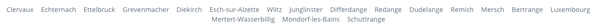Dans le pied de page, la suite de liens de communes ("Clervaux", "Echternach", ...), n'est pas une liste.
Structure du document
L'utilisation correcte des balises HTML5 et des landmarks ARIA va permettre d'enrichir la restitution pour les utilisateurs aveugles qui ne perçoivent pas les mises en forme : la navigation principale ne sera plus perçue simplement comme une liste de liens, elle sera restituée à l'utilisateur comme un élément de navigation, par l'intermédiaire du lecteur d'écran qui annoncera « région » ou « repère ».
De plus, ces marqueurs sémantiques vont également constituer des éléments de navigation rapide dans la page. Grâce à un raccourci clavier, certains utilisateurs vont pouvoir naviguer plus rapidement entre les régions qui auront été ainsi identifiées.
Constats sur le site
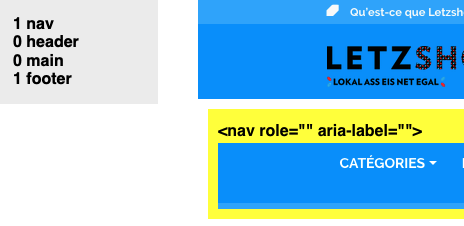Sur l'ensemble du site, il manque les éléments <header role="banner"> et <main role="main">.
Présentation de l'information
Recommandation
Utiliser des feuilles de styles pour contrôler la présentation de l'information. Vérifier l'effet de l'agrandissement des tailles des caractères sur la lisibilité. S'assurer que les liens sont correctement identifiables, que la prise de focus est signalée, que l'interlignage est suffisant et donner la possibilité à l'utilisateur de contrôler la justification des textes. S'assurer que les textes cachés sont correctement restitués et que l'information n'est pas donnée uniquement par la forme ou la position d'un élément. S'assurer que les contenus sont lisibles et utilisables dans une fenêtre de largeur réduite. Veiller à ce que l'application de paramètres typographiques n'entraîne pas la perte de contenu ou de fonctionnalité. S'assurer que les contenus qui apparaissent au survol et à la prise de focus puissent être contrôlés par l'utilisateur.
Utilisation de CSS exclusivement
Certains utilisateurs qui présentent des troubles de la lecture (personnes dyslexiques par exemple), vont avoir besoin d'adapter la présentation des pages avec leurs propres mises en forme. Cela est possible sans difficulté si le site web utilise exclusivement les feuilles de styles CSS pour réaliser les mises en forme. Cependant, l'utilisation d'attributs et balises HTML de mise en forme rend ces adaptations plus compliquées, sinon impossibles.
Le RGAA donne la liste des attributs et balises qu'il est interdit d'utiliser.
Constats sur le site
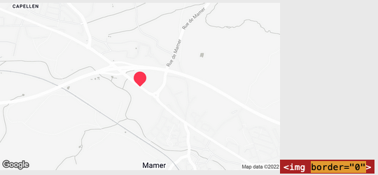Sur la page "Pull à manches courtes avec rayures en bloc", on retrouve l'attribut border="0" sur l'image Google Map (dans le bloc de contenu "The Corners Belle Etoile").
Contenu visible sans les feuilles de styles
Des contenus informatifs insérés avec CSS (avec des images de fond contenant du texte en image) peuvent ne pas être restitués par les lecteurs d'écran ou les systèmes de loupes vocalisés.
Constats sur le site
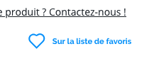Sur la page "Pull à manches courtes avec rayures en bloc", l'image du cœur insérée avec CSS dans le bouton "Sur la liste de favoris" n'est plus visible.
Contenu compréhensible sans les styles : ordre visible vs ordre réel
Un utilisateur aveugle n'a pas accès à la mise en forme qui parfois est porteuse d'informations importantes, notamment des relations entre les éléments.
Il est important de ne pas implémenter les textes dans l'ordre visuel, mais bien dans l'ordre logique de dépendance et hiérarchie des éléments.
Le contenu doit rester compréhensible sans les feuilles de styles (vous pouvez tester vos contenus en désactivant les feuilles de styles).
Constats sur le site

Dans le pied de page du site, dans le bloc "Restez informés des nouveautés de Letzshop !", le lien "à la politique de confidentialité" n'est pas dans un ordre cohérent pour donner l'information correctement à l'utilisateur.
Agrandissement des tailles de texte
Certaines personnes déficientes visuelles, également des personnes ayant des difficultés de lecture comme les personnes dyslexiques, ont besoin d'adapter la taille du texte à l'écran.
L'agrandissement des caractères ne doit pas provoquer de perte d'informations. À 200%, le contenu doit rester lisible et compréhensible, toutes les informations doivent rester présentes.
Il existe plusieurs méthodes pour contrôler l'agrandissement des caractères :
- La fonction d'agrandissement du texte du navigateur (le zoom texte) ;
- Les fonctions de zoom graphique du navigateur ;
- Un composant d'interface propre au site permettant d'agrandir le texte ou de zoomer.
Constats sur le site
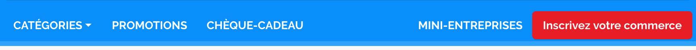Quand la taille du texte est à 200% sur le site, le menu de navigation principal ("Catégories", "Promotions", ...) n'est plus lisible (certains liens ne sont plus visibles).
Liens dont la nature n'est pas évidente
Un lien dont la nature n'est pas évidente est un lien qui peut être confondu avec un texte normal lorsqu'il est signalé uniquement par la couleur par certains utilisateurs ne percevant pas ou mal les couleurs.
Les personnes déficientes visuelles peuvent ignorer ces liens puisque ceux-ci ne sont pas visuellement discernables du reste du texte dans lequel ils sont insérés.
Constats sur le site
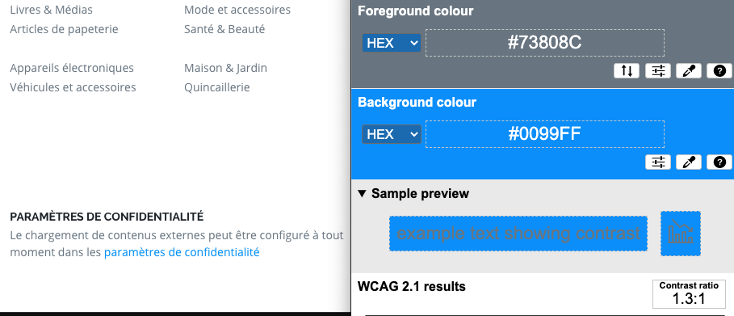Dans le pied de page du site, le lien "paramètres de confidentialité", n'est pas assez contrasté ou visuellement discernable du reste du texte.
Visibilité de la prise de focus
Les personnes avec un handicap moteur qui naviguent au clavier peuvent rencontrer des difficultés considérables à utiliser du contenu si elles ne sont pas en mesure de repérer l'indication visuelle du focus et ses déplacements.
Constats sur le site
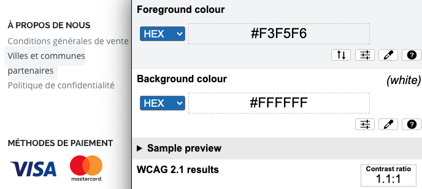Dans le pied de page du site, la prise de focus liens dans les listes, "À propos de nous", "Achats locaux", ..., n'est pas assez contrastée.
Information donnée par la forme, la taille ou la position
Les utilisateurs qui ne perçoivent pas la mise en forme (utilisateurs aveugles par exemple) n'auront pas accès aux informations véhiculées par la mise en forme la taille (taille du texte pour signifier un degré d'importance par exemple), ou la position (une consigne indiquant de cliquer en haut à droite par exemple). Il est nécessaire de fournir un équivalent textuel qui permette d'offrir la même information aux utilisateurs aveugles.
Constats sur le site
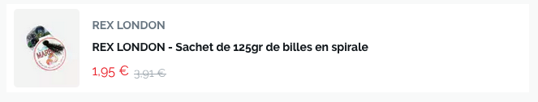Dans certaines pages du site, lorsqu'on retrouve un article en promotion, l'ancien prix est affiché en gris, il est barré et le nouveau prix est affiché en rouge.
Largeur réduite
Il s'agit ici de tester la capacité des contenus à se réorganiser lorsqu'un utilisateur malvoyant doit réaliser un zoom graphique de 400%. À ce titre, on teste la lisibilité des contenus dans une fenêtre de largeur réduite à 320px.
On s'assure que l'utilisateur a accès à tous les contenus et que tous les contenus sont lisibles sans avoir recours à la barre de défilement horizontale.
Constats sur le site
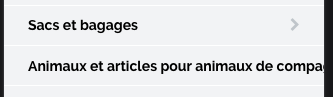Dans le menu principal de navigation du site en version mobile, le lien "Animaux et articles pour animaux de compagnie" est tronqué.
Paramètres typographiques
Les utilisateurs malvoyants et/ou dyslexiques ont souvent recours à des adaptations de la présentation des textes. Pour cela, on doit s'assurer que de tels paramètres ne viennent pas perturber leur lecture sur le site.
Les présentations doivent supporter l'application de paramètres typographiques visant à augmenter les interlignages, interlettrages, les espaces entre les mots et entre les paragraphes. L'application de ces paramètres ne doit pas entraîner la perte de contenus ou de fonctionnalités :
- L'interlignage augmenté de 1,5 fois la taille de la police ;
- L'espacement entre les paragraphes augmenté de 2 fois la taille de la police ;
- L'espacement des lettres augmenté de 0,12 fois la taille de la police ;
- L'espacement des mots augmenté jusqu'à 0,16 fois la taille de la police.
Constats sur le site
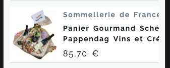Sur la page d'accueil, les contenus de certains éléments dans le bloc "Découvrez toutes les nouveautés" en version mobile, sont tronqués.
Contenus additionnels au survol et au focus
Les contenus additionnels qui apparaissent au survol ou à la prise de focus (par exemple, un menu déroulant, une infobulle d'information), peuvent être contrôlés par l'utilisateur. Par exemple, les utilisateurs malvoyants utilisateurs de loupes d'écran peuvent déclencher l'affichage accidentel des contenus qui apparaissent au survol et ces affichages non désirés perturbent la consultation pour ces utilisateurs. L'utilisateur doit alors disposer d'un moyen simple pour les masquer et continuer sa consultation.
Également, en utilisant une loupe d'écran, il est probable que le contenu additionnel soit en fait apparu en dehors de la zone de zoom de la loupe, l'utilisateur doit pouvoir survoler le contenu additionnel à la souris.
Constats sur le site
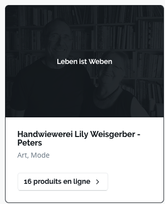Sur la page d'accueil, dans certains des éléments du bloc "Vos commerces à Luxembourg", par exemple : le contenu additionnel "Leben ist Weben" n'apparaît que via les styles CSS.
Formulaires
Recommandation :
Associer pour chaque formulaire chacun de ses champs à son étiquette, grouper les champs dans des blocs d'informations de même nature, regrouper les items de même nature dans les listes de choix, donner à chaque bouton un intitulé explicite. Vérifier la présence d'aide à la saisie, s'assurer que le contrôle de saisie est accessible et que l'utilisateur peut contrôler les données a caractère financier, juridique ou personnel.
Étiquettes et champs
Les champs de formulaires doivent tous posséder des étiquettes correctement reliées.
Une étiquette de champ est un texte situé à proximité du champ de formulaire qui permet de connaître la nature, le type ou le format des informations attendues.
De cette manière, lorsqu'un utilisateur entre dans le champ de saisie avec un lecteur d'écran, le lecteur d'écran lit le contenu de l'étiquette. L'utilisateur comprend alors ce qu'il doit saisir.
Sans cela, même si une étiquette est présente visuellement, l'utilisateur entendra « champ de saisie vide » en entrant dans le champ et ne saura donc pas quoi saisir.
Constats sur le site
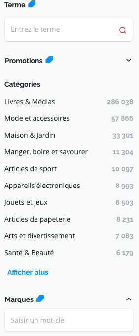Sur la page des produits, dans la colonne des filtres (à gauche de la page), les champs "Entrez un terme", "Saisir un mot-clé", "Ville ou code postal" n'ont pas d'étiquette.
Intitulés de bouton pertinents
Les boutons qui permettent d'interagir avec les formulaires doivent avoir des intitulés pertinents pour que l'utilisateur comprenne l'action du bouton.
Ces intitulés sont essentiels pour les personnes aveugles, afin qu'elles soient sûres de l'action qu'elles s'apprêtent à réaliser.
Constats sur le site
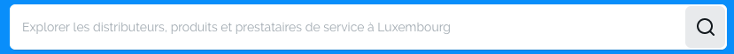Dans l'en-tête principal du site, le bouton du formulaire de recherche n'a pas d'intitulé.
Contrôle de saisie et aide à la saisie
Tous les champs obligatoires doivent être identifiés préalablement à toute validation de l’utilisateur.
Pour les champs qui attendent un format de saisie particulier pour être validés, ce format doit être spécifié à l’utilisateur par un passage de texte visible à proximité du champ. De plus, si l’utilisateur commet une erreur sur ce champ, alors le message d’erreur doit présenter un exemple réel de saisie.
Enfin, les messages d'erreur de saisie des champs de formulaire doivent être liés correctement aux champs en erreur.
Constats sur le site
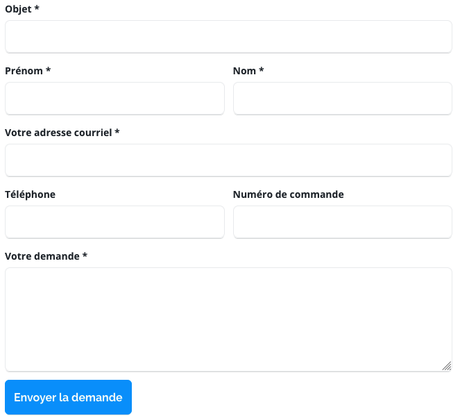Sur la page de contact du site :
- les champs "Votre adresse courriel", "Téléphone", et "Numéro de commande", attendent un format particulier qui n'est pas spécifié ;
- les champs obligatoires ne sont pas identifiés (l’astérisque ne suffit pas, il faut une mention qui explique ce qu’il signifie).
Regroupements de champs et légendes
Les regroupements de champs sont utiles pour ne pas induire certains utilisateurs en erreur, notamment les personnes aveugles.
Les cas typiques de regroupements nécessaires sont les groupes de cases à cocher ou de boutons radio.
Il faut implémenter les champs dans un regroupement lorsque c'est nécessaire et il est obligatoire de définir une légende à ce regroupement.
Constats sur le site
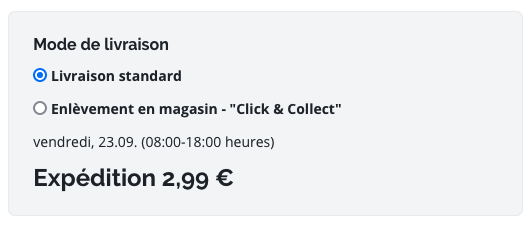Sur la page de la vérification de la commande (avant le paiement), les champs "Envoyé par courriel électronique", "Livraison standard" et "Enlèvement en magasin - "Click & Collect", ne sont pas regroupés dans des éléments <fieldset>.
Identification des données attendues
Certains utilisateurs qui ont des troubles d'accès au langage verbal (paralysie cérébrale, aphasie par exemple) auront des difficultés à accéder au sens des termes écrits. Ainsi, pour leur permettre de remplacer les étiquettes présentes dans les formulaires par des étiquettes (verbales ou imagées) qu'ils connaissent, il est nécessaire d'identifier les champs avec un attribut particulier, de sorte qu'une technologie d'assistance pourra réaliser la personnalisation du formulaire nécessaire à l'utilisateur.
L'identification de ces champs permet également aux utilisateurs d'employer des outils pour remplir automatiquement les champs identifiés avec des valeurs de l'utilisateur.
On ne va rechercher que les champs qui attendent une donnée personnelle. Le RGAA demande d'utiliser l'attribut autocomplete et il fournit l'ensemble des valeurs possibles pour l'attribut.
Constats sur le site
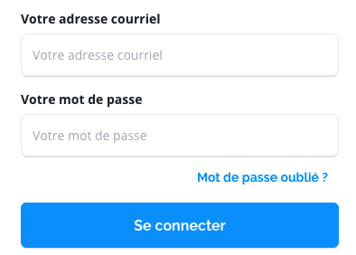Sur la page de connexion, les champs n'ont pas l'attribut autocomplete :
- "Votre adresse courriel" :
autocomplete="email"; - "Votre mot de passe" :
autocomplete="current-password".
Navigation
Recommandation :
Faciliter la navigation dans un ensemble de pages par au moins deux systèmes de navigation différents (menu de navigation, plan du site ou moteur de recherche), un fil d'Ariane et l'indication de la page active dans le menu de navigation. Identifier les groupes de liens importants et la zone de contenu et donner la possibilité de les éviter par des liens de navigation interne. S'assurer que l'ordre de tabulation est cohérent et que la page ne comporte pas de piège au clavier. S'assurer que les raccourcis clavier qui utilisent une seule touche sont contrôlables par l'utilisateur.
Systèmes de navigation
Le RGAA demande qu'un site propose au moins deux systèmes de navigations différents. Prévoir deux systèmes de navigation au moins est importants, car :
- tous les utilisateurs ne naviguent pas de la même manière ;
- certains systèmes de navigation peuvent s'avérer trop complexes à utiliser, en particulier pour les personnes qui ont recours à des technologies d'assistance. Par exemple, un menu de navigation trop riche, comme un méga-menu, peut nécessiter beaucoup d'actions pour un utilisateur qui navigue exclusivement au clavier, et donc rendre sa recherche d'information très laborieuse.
Par systèmes de navigation, on entend tout procédé permettant une navigation dans le site ou dans une page, parmi :
- un menu de navigation principal ;
- un plan du site ;
- un moteur de recherche.
Note : un moteur de recherche est considéré comme un moyen de navigation s'il indexe toutes les pages du site (y compris les pages de type « Mentions légales » ou « Politique de confidentialité »), et non pas seulement un choix limité (par exemple, seulement les offres tarifaires).
Constats sur le site
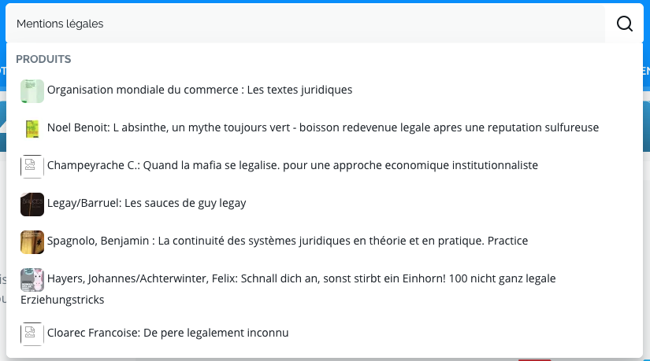Le site ne dispose que d'un menu de navigation. Le moteur de recherche ne peut pas être considéré comme un système de navigation, il n'indexe que les pages de produits.
Liens d'accès rapide
On note l'absence d'un lien d'accès rapide au contenu au moins. Les liens d'accès rapides sont utiles aux utilisateurs qui naviguent au clavier, mais aussi aux utilisateurs malvoyants qui utilisent une loupe d'écran afin de sauter rapidement les éléments redondants, comme la navigation.
Pour cela, il est préférable que ces liens soient toujours visibles à l'écran. Malgré cela, ces liens peuvent être positionnés hors écran, mais doivent au moins être rendus visibles à la prise de focus.
Il est donc nécessaire d'implémenter au moins un lien d'accès rapide au contenu, qui permet de sauter toute la navigation principale.
Constats sur le site
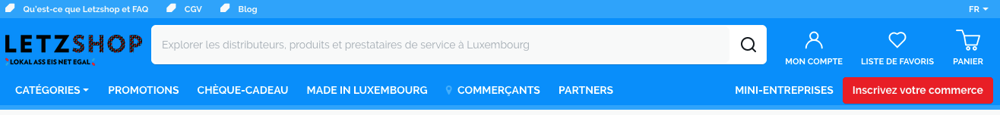Sur l'ensemble du site, il manque un lien d'accès rapide au contenu principal.
Landmarks ARIA
Pour fournir des points de repère aux utilisateurs aveugles, il faudra également implémenter les landmarks ARIA sur les balises HTML 5 de la page.
Constats sur le site
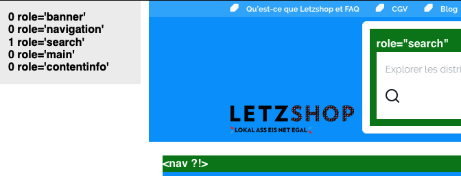Sur les pages de l'ensemble du site, les zones principales n'ont pas d'attribut role :
- le menu principal du site (
<nav>) n'a pas d'attribut :role="navigation"; - le pied de page du site (
<footer>) n'a pas d'attribut :role="contentinfo".
Consultation
Recommandation
Vérifier que l'utilisateur a le contrôle des procédés de rafraîchissement, des changements brusques de luminosité, des ouvertures de nouvelles fenêtres et des contenus en mouvement ou clignotants. Ne pas faire dépendre l'accomplissement d'une tâche d'une limite de temps sauf si elle est essentielle et s'assurer que les données saisies sont récupérées après une interruption de session authentifiée. Proposer des versions accessibles ou rendre accessibles les documents en téléchargement. S'assurer que la consultation n'est pas dépendante de l'orientation de l'écran. Toujours proposer un geste simple en alternative d'un geste complexe permettant de réaliser une action.
Contenus en mouvement ou clignotants
Les contenus en mouvement peuvent être problématiques pour les utilisateurs avec des difficultés de lecture, en effet un contenu qui défile trop rapidement empêche d'accéder de fait à l'information. De plus, pour les personnes avec un déficit de l'attention, le mouvement les empêche de lire le reste de la page.
Il faut alors permettre aux utilisateurs d'arrêter et de redémarrer le contenu en mouvement , ou d'afficher tout le contenu sans le mouvement ou de masquer le contenu en mouvement et de le réafficher.
Constats sur le site
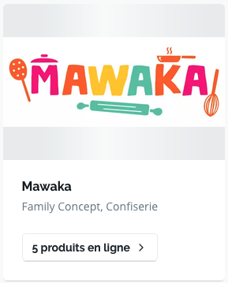Sur la page d'accueil du site et la page commerçants, les images des blocs "Vos commerces à Luxembourg", dont le ratio ne remplit pas l’élément : il y a une animation en arrière-plan qui ne peut jamais être arrêtée (par exemple sur le commerce : "Mawaka").